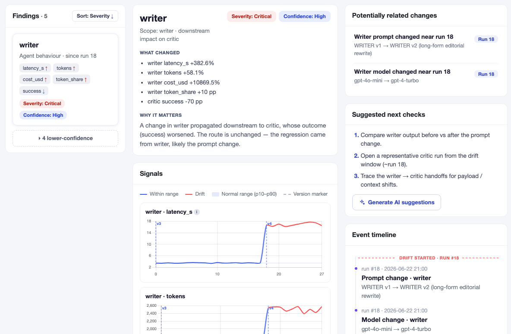

Traces tell you what happened.
AgentPulse shows you where to investigate.
Open-source drift investigation for multi-agent systems: which agent drifted, why, and what to check next.

Open-source drift investigation for multi-agent systems: which agent drifted, why, and what to check next.
Add two lines at startup. AgentPulse automatically instruments OpenAI, Anthropic, LangChain, and AutoGen.
LLM calls, agent turns, tool calls, and handoffs are stored locally in one SQLite file per project. Core tracing works without an AgentPulse cloud account or hosted backend.
AgentPulse compares behavior across runs and versions, then flags agent, handoff, and route drift when signals leave their expected range.
Follow the drift upstream to its likely source, with supporting signals, related changes, confidence, and suggested next checks.
When an outcome degrades, AgentPulse does not hand you a dashboard of symptoms. It compares every component against your baseline and walks the agent graph to the point where the drift originated.
Four rules turn a baseline breach into a root-cause finding:

Likely cause identified Related change detectedSee every run as an execution timeline and interactive agent graph, not a wall of log lines.
 6.7s bottleneck branch
6.7s bottleneck branch
AgentPulse ships an MCP server, so Claude Code and Claude Desktop can triage drift, compare releases, and propose next checks conversationally. Three ready-made skills are bundled.
get_todays_findingActive drift findings as root-cause-led investigation cardsget_version_comparisonWhich release introduced the change that broke an outcomeget_next_check_stepsRecommended next investigation steps per findingBook a 30-minute walkthrough of a real drift investigation, or ask how to wire AgentPulse into your stack.
AgentPulse is a reference implementation, and we want to learn how your team investigates agent failures. Tell us what works, what's missing, or how you do it differently.
Share feedback in Discussions →